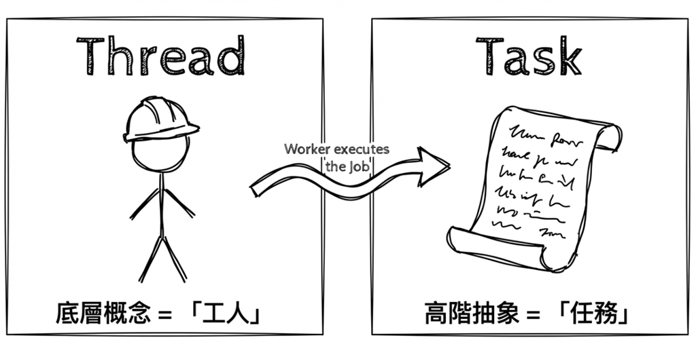
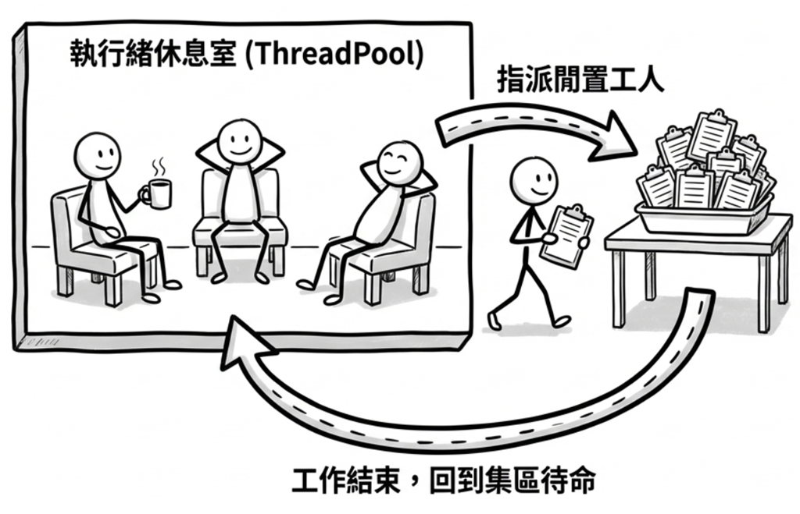
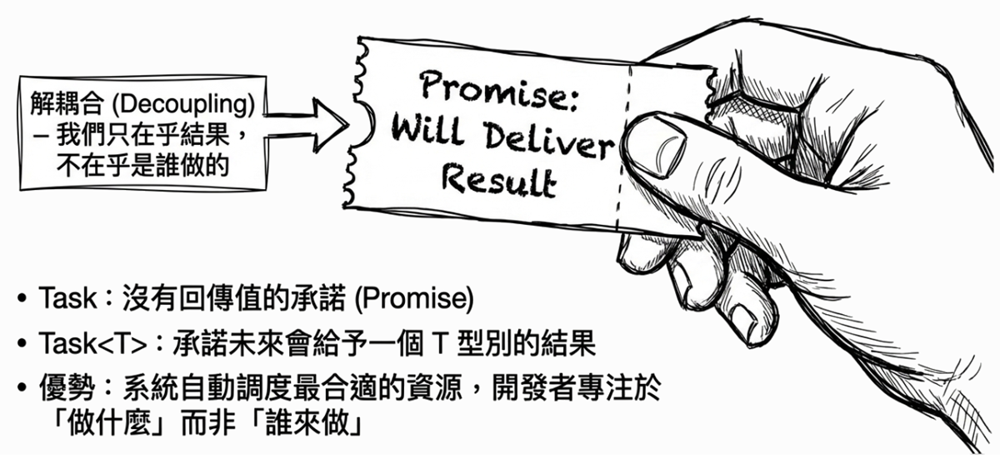
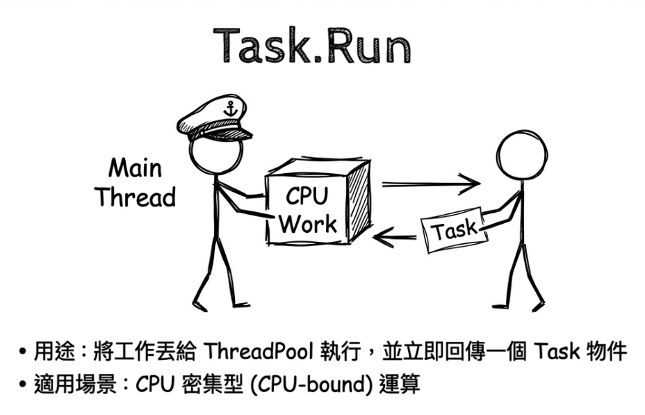
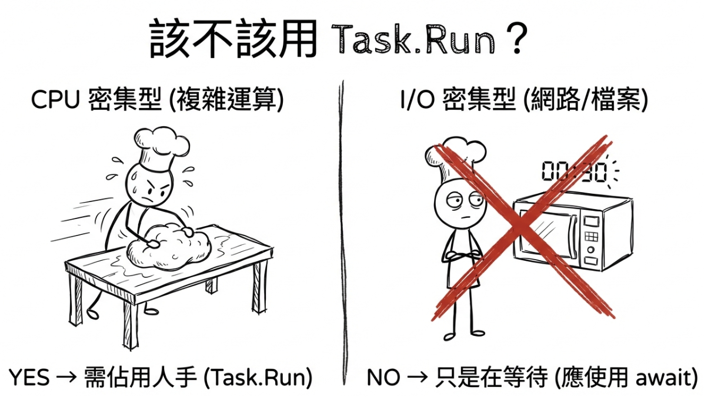
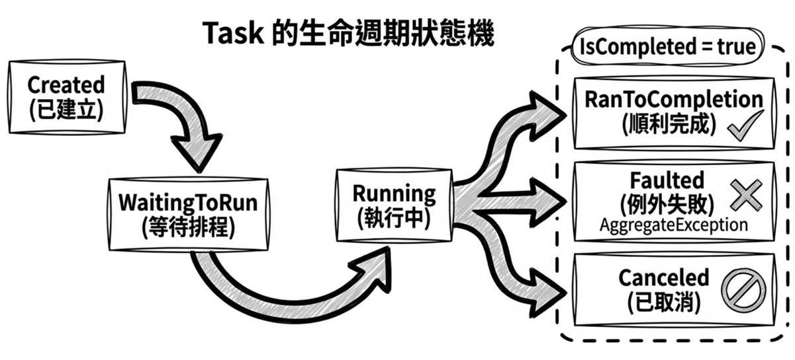
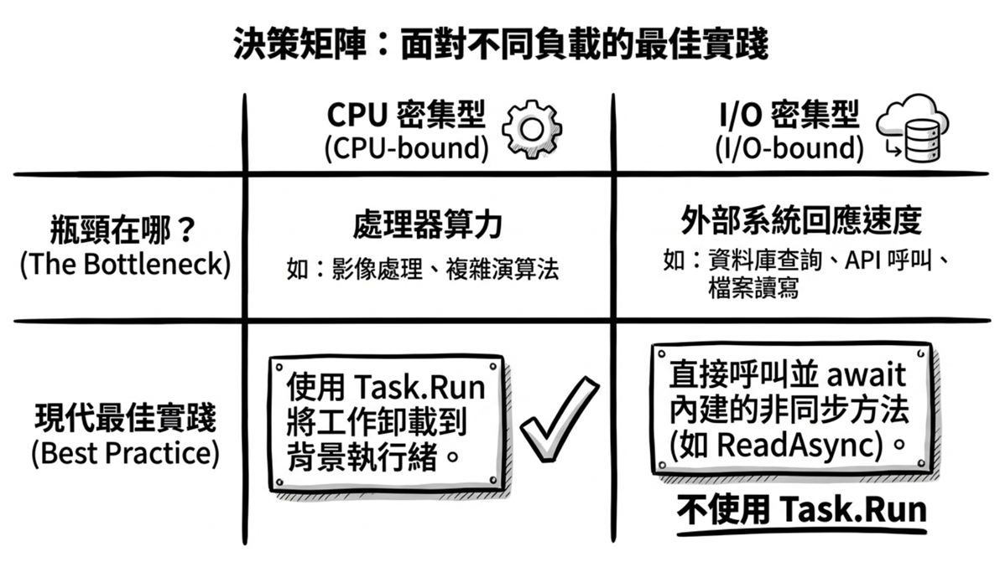

第 2 章：.NET 中的執行緒與工作
在第一章，我們透過披薩店的比喻，理解了應用程式為什麼需要同時處理多件事，也大致看見了多執行緒和非同步程式設計如何提升效率。然而，我們也看見了這樣做的另一面：多執行緒帶來的管理複雜性，例如 context switch 的開銷和資源同步問題。
本章正式進入 .NET 的世界，看看這些概念在程式裡是怎麼落實的。目標是帶你理解 .NET 中實現非同步與多工的兩個核心概念：執行緒 (thread) 與 工作 (task)，並學習如何利用現代工具避開傳統執行緒管理的陷阱。
許多初學者會把執行緒與工作混為一談，但若想寫出高效、穩定的非同步程式碼，先釐清它們的區別會很有幫助。簡單來說：
- 執行緒 (thread) 是一個較低階的概念，你可以把它想像成執行程式碼的「工人」。
- 工作 (task) 是一個較高階的抽象概念，代表一個需要完成的「工作」。

本章會依序走過下面幾個重點：
- 傳統方式的挑戰：回顧直接管理執行緒的複雜性與侷限。
- 核心觀念：Task：理解
Task如何作為高階抽象，解決傳統執行緒管理的痛點。 - 現代起手式：Task.Run：學習如何利用
Task.Run輕鬆啟動背景工作。 - Task 的生命週期與狀態：了解
Task從建立到完成的各種狀態變化。 - 工作不等於執行緒：釐清 CPU-bound 與 I/O-bound 的本質差異。
- 前景執行緒 vs. 背景執行緒：了解執行緒生命週期的關鍵差異。
傳統方式的挑戰：直接管理執行緒的複雜性
在早期版本的 .NET，開發者需要更直接地與執行緒打交道。這種作法雖然提供了很大的控制權，卻也伴隨著顯著的複雜性與潛在問題。先看清楚這些挑戰，後面再理解現代非同步程式設計帶來的簡化，就會更有感。
先備知識：主執行緒與工作執行緒
在接下來的範例中，你會頻繁看到兩個名詞：
- 主執行緒 (main thread)：當應用程式啟動時，作業系統配給這支程式的第一個（也是預設的）執行緒。如果主執行緒被卡住（阻塞），整個程式可能就會沒有反應。
- 工作執行緒 (worker thread)：除了主執行緒以外，其他用來執行工作的執行緒都可以先這樣泛稱。它們可能是我們額外建立的執行緒，也可能是向
ThreadPool借來的執行緒。至於它在 .NET 生命週期上究竟屬於「前景執行緒」還是「背景執行緒」，我們會在本章後段再精確說明。
直接建立執行緒：Thread.Start
先看最傳統的作法：手動建立 System.Threading.Thread 物件，然後呼叫 Start 方法，讓新的執行緒開始執行指定的工作。範例如下：
var msg = $"主執行緒 ID: {Environment.CurrentManagedThreadId}";
Console.WriteLine(msg);
// 建立一條新的執行緒來執行 DoWork
var newThread = new Thread(DoWork);
newThread.Start();
Console.WriteLine("主執行緒繼續執行...");
void DoWork()
{
var msg = $"工作執行緒 ID: {Environment.CurrentManagedThreadId}";
Console.WriteLine(msg);
Console.WriteLine("工作正在進行中...");
Thread.Sleep(2000); // 模擬耗時 2 秒的工作
Console.WriteLine("工作完成。");
}程式執行結果：
原始碼： DemoThreadStart
光看寫法，好像不算太麻煩。但只要把它放到真實應用場景，就會很快看見這種作法的問題：
- 成本高昂：每建立一條執行緒，系統都必須替它保留一塊不小的記憶體空間作為執行緒堆疊（thread stack），並耗費額外資源進行作業系統核心（kernel）層級的設定。實際堆疊大小會依作業系統與預設組態而異；以 Windows 為例，預設的保留大小常見是約 1MB。如果頻繁地為小工作建立新執行緒，就像是為了送一份外賣而專門聘請一位新員工，效率很差。
- 管理複雜：你需要手動管理執行緒的生命週期，而且難以取得回傳值或處理例外。
Note: 上述有關 Windows 預設約 1MB 執行緒堆疊保留大小的陳述，係根據微軟文件：Thread Stack Size。
關於
Thread.Sleep本書的許多範例都會用到
Thread.Sleep()。它在範例程式中的主要用途，是刻意製造一段容易觀察的延遲或阻塞效果，好讓你更清楚看見執行緒切換、等待與程式流程。
Thread.Sleep本身並不是非同步程式設計的一環；恰恰相反，它正是我們想透過非同步技巧避免的那種「阻塞等待」。明確地說，Thread.Sleep會阻塞執行緒，讓它無法去做其他工作；它也不代表真正的 CPU 密集型運算，因為執行緒在Sleep期間其實沒有做計算，只是單純停住不動。在真實的 I/O 操作中，我們追求的是在等待期間不要阻塞執行緒；而在真實的 CPU 密集型場景中，通常是執行複雜計算，而不是呼叫Sleep。
執行緒的重複利用：ThreadPool
為了解決 new Thread() 帶來的效能問題，.NET 引入了執行緒集區 (thread pool)。你可以把它想像成 .NET 先替你的應用程式聘好一群「駐點工人」（Thread）。當有工作項目需要執行時，就從這個「工人集區」中指派一位閒置的工人來處理。工作結束後，工人會回到集區待命，而不是被解僱。這樣一來，資源利用效率就能大幅提升。

下面這個範例，基本邏輯和前一個 DemoThreadStart 完全相同；差別只在於，這次不再手動建立執行緒，而是改由「執行緒集區」指派現有的工人來處理工作：
var msg = $"主執行緒 ID: {Environment.CurrentManagedThreadId}";
Console.WriteLine(msg);
// 將工作項目排入執行緒集區
ThreadPool.QueueUserWorkItem(_ => DoWork());
Console.WriteLine("主執行緒繼續執行...");
Thread.Sleep(3000); // 等待背景工作完成，否則主程式可能先結束
void DoWork()
{
var msg = $"背景執行緒 ID: {Environment.CurrentManagedThreadId}";
Console.WriteLine(msg);
Console.WriteLine("背景工作正在進行中...");
Thread.Sleep(2000); // 模擬耗時 2 秒的工作
Console.WriteLine("背景工作完成。");
}原始碼： DemoThreadPool
既然 ThreadPool 能重複利用執行緒，問題是不是都解決了？不完全是。ThreadPool 雖然大幅改善了效能，但仍有兩個主要缺點：
- 射後不理： 這裡示範的
ThreadPool.QueueUserWorkItem(...)是一種「射後不理 (fire-and-forget)」的模式，所以你很難知道工作何時完成，也無法輕易取得回傳值。 - 例外黑洞： 如果背景工作發生錯誤，由於「主執行緒」無法直接捕捉背景執行緒拋出的例外，處理起來也會相對麻煩且危險。
Note
當你透過
ThreadPool.QueueUserWorkItem(...)把工作排進ThreadPool之後，主執行緒就繼續往下走了。如果背景工作在執行過程中拋出例外，這個例外會直接在「背景執行緒」的頂層引爆，而原呼叫者（主執行緒）是無法用 try-catch 捕捉到它的。在現今的 .NET 環境下，這通常會導致整個處理序（process）崩潰。若要安全處理，開發者就得在這類透過
ThreadPool.QueueUserWorkItem(...)排入的工作內部，自己手動包好 try-catch，然後再想辦法把錯誤狀態傳回主程式。這通常會牽涉到更複雜的狀態共用與同步機制。
核心觀念：Task - 解決執行緒管理複雜性的高階抽象
這樣看下來，現代 .NET 想解決的方向就很清楚了：我們需要一個比直接管理執行緒更高階的抽象。在 C# 中，System.Threading.Tasks.Task 物件正是現代非同步程式設計的核心。當你看到一個方法的回傳型別是 Task 或 Task<T>，可以先把它理解為一個「承諾 (promise)」或「未來憑證 (future)」：
Task：代表一個沒有回傳值的非同步操作。它承諾「我會在未來某個時間點完成這項工作」。Task<T>：代表一個有回傳值的非同步操作。它承諾「我會在未來某個時間點完成工作，並且給你一個T型別的結果」。
這個「承諾」最有價值的地方，在於它把「要執行的工作」與「執行工作的工人」解耦合了。你只要拿到這個 Task 物件，就能追蹤它的狀態，例如是否已完成、是否發生錯誤，並在它完成時取得結果，而不必一直關心它到底是在哪一條執行緒上執行的。

這種抽象化帶來了很大的好處。.NET 的執行環境（runtime）可以根據當下的系統負載、CPU 核心數量等因素，用更有效率的方式來排程並執行這些 Task。例如，它可以重複利用現有執行緒，避免頻繁建立與銷毀執行緒的效能開銷。也因此，Task 能改善傳統 Thread 和 ThreadPool 在生命週期管理、回傳值取得，以及例外處理上的痛點，讓開發者能專注在「要做什麼工作」，而不是「該叫哪個工人去做，以及如何監督他」。
現代起手式：Task.Run
回想第一章的披薩店，我們的廚師主要是被「等待烤箱」這件事耽擱住，那屬於 I/O 密集型 (I/O-bound) 操作。但如果今天廚師接到的是一張複雜的手工訂單，需要他連續揉十分鐘麵糰呢？這種需要 CPU 全力運算的工作，就稱為 CPU 密集型 (CPU-bound) 操作。
面對這種 CPU 密集型工作，我們同樣不希望它一直佔住主廚；在程式裡，這個「主廚」可能就是 UI 執行緒或主執行緒。一個很自然的作法，是把它交給廚房裡的另一位幫手去處理。這正是 Task.Run 的核心使命：把 ThreadPool 的高效能和 Task 抽象化帶來的優點結合在一起。
Task.Run 的作用是：將一個工作交給執行緒集區去執行，並立即回傳一個代表該工作的 Task 物件。

先用一個基本例子看它怎麼用。下面這段程式會用 Task.Run 把一段耗時工作推派到背景執行緒，然後透過回傳的 Task 物件來等待它完成：
var msg = $"主執行緒 ID: {Environment.CurrentManagedThreadId}";
Console.WriteLine(msg);
Console.WriteLine("準備使用 Task.Run 執行背景工作...");
// 將工作交給執行緒集區，並取得 Task 物件
Task task = Task.Run(() =>
{
var msg = $"背景執行緒 ID: {Environment.CurrentManagedThreadId}";
Console.WriteLine(msg);
Console.WriteLine("背景工作正在進行中...");
Thread.Sleep(2000); // 用來簡化模擬一段耗時的同步工作
Console.WriteLine("背景工作完成。");
});
Console.WriteLine("主執行緒已呼叫 Task.Run，繼續執行其他事情...");
// 等待 Task 完成
task.Wait();
Console.WriteLine("確認 Task 已完成，主程式即將結束。");執行結果：
這裡使用 task.Wait()，只是為了在 Console 應用程式中確保背景工作能執行完畢。在真實的非同步程式碼中，特別是 UI 或伺服器端應用，我們通常應該使用 await 來非同步地等待 Task，而不是用 Wait() 阻塞當前執行緒。這部分我們會在下一章深入探討。
原始碼： DemoTaskRun
如果背景工作還需要回傳結果，Task.Run 同樣能處理：
Console.WriteLine("準備使用 Task.Run 執行有回傳值的背景工作...");
// Task<string> 代表此工作未來會回傳一個 string
Task<string> taskWithResult = Task.Run(() =>
{
Thread.Sleep(2000);
return "這是背景工作的計算結果";
});
Console.WriteLine("主執行緒繼續執行...");
// 使用 .Result 屬性會阻塞當前執行緒，直到 Task 完成並取得結果
string result = taskWithResult.Result;
Console.WriteLine($"從背景工作取得的結果: {result}");不過，這裡要再提醒一次：如前面提過的，呼叫 Task 的 .Wait() 方法會阻塞當前執行緒；這個範例使用 .Result 屬性取得非同步工作的結果，也同樣會阻塞執行緒，因而失去非同步原本該有的優勢。所以在撰寫非同步程式時，應盡量避免呼叫 .Wait() 或讀取 .Result 屬性。
更自然、也更符合現代寫法的作法，是直接使用 await 關鍵字：
如你所見，使用 await 之後，程式碼在保持非同步優勢的同時，讀起來仍然像同步程式碼一樣直觀、簡潔。至於這背後的魔法，我們會在下一章再深入探討。
Note: 此範例中，交給
Task.Run執行的程式碼在實際執行時會佔住一條背景執行緒。
這裡可以先記住一個重點：Task.Run 最適合拿來處理 CPU 密集型工作。 例如複雜計算，就很適合從 UI 執行緒或主執行緒移開，改交給背景執行緒處理。
判斷何時「必須」用 Task.Run 的準則很簡單：如果 async 方法內有純運算（例如加密、格式轉換），執行它會在 UI 執行緒上卡住 UI，那就應該改用 Task.Run 卸載到背景執行緒。但如果只是等待 I/O（下載檔案、資料庫查詢），async/await 本身就能避免阻塞，不需要 Task.Run。判斷的關鍵是：工作本質上是 CPU 密集型，還是 I/O 密集型。

如何讓 Console 應用程式支援
await？為了讓
await關鍵字能在程式的進入點（Main方法）中使用，你需要確保專案設定正確。
- 現代 .NET 的預設 Console 專案範本： 當你建立新的主控台應用程式時，專案預設會使用「頂層陳述式 (top-level statements)」，你不需要定義
Main方法，可以直接在Program.cs檔案的最上層使用await。（.NET 6+）- 舊版 C#: 你需要手動將
Main方法的簽章修改為public static async Task Main(string[] args)。（備註：C# 7.1+ 才有支援async Main）
不要用 Task.Run 呼叫非同步 I/O 方法
Task.Run 的核心使命，是把同步的、CPU 密集型工作卸載到背景執行緒，以避免阻塞上層呼叫者。然而，很多人會把一個本身已經是非同步的 I/O 方法，再用 Task.Run 包裝一次。
✘ 反模式 (anti-pattern)：
var json = await Task.Run(
async () => await httpClient.GetStringAsync(url));✔ 正確作法：
var json = await httpClient.GetStringAsync(url);httpClient.GetStringAsync 本身就是非同步方法。當它被 await 時，它已經會在等待網路 I/O 完成的期間避免阻塞當前執行緒。這時再用 Task.Run 把它包起來，不但沒有任何額外好處，反而只會多增加一次不必要的 ThreadPool 排程與委派包裝成本。
Task 的生命週期與狀態
當我們透過 Task.Run 或其他方式取得一個 Task 物件後，就可以透過它的 Status 屬性，也就是 TaskStatus 列舉，來了解工作目前進行到哪裡。一個 Task 的典型生命週期，大致會出現以下幾種重要狀態：
Created：工作已建立，但尚未被排程執行。WaitingForActivation：工作正在等待被啟用。這在依賴基礎架構發出完成通知的非同步操作（如Task.Delay或 I/O 工作）中非常常見。WaitingToRun：工作已排程，正在等待執行緒集區分配執行緒。Running：工作正在執行中。RanToCompletion：工作已順利執行完畢。Faulted：工作因為發生未處理的例外（exception）而失敗。Canceled：工作已被取消。
除了 Status 屬性，Task 還提供了幾個方便的布林屬性：IsCompleted、IsFaulted 與 IsCanceled。值得留意的是，只要工作處於上列最後三種狀態之一：RanToCompletion、Faulted、或 Canceled，那麼 IsCompleted 就會是 true。

這些狀態名稱光看有點抽象，所以我們直接用一個簡短範例來觀察變化：
Console.WriteLine("建立並啟動一個會故意失敗的任務...");
Task myTask = Task.Run(() =>
{
Console.WriteLine("任務開始執行，即將拋出例外...");
Thread.Sleep(500);
throw new InvalidOperationException("哎呀，任務失敗了！");
});
try
{
// 故意等待任務完成，以觀察它的最終狀態
myTask.Wait();
}
catch (AggregateException)
{
// 使用 Wait() 等待失敗的 Task 時，
// 例外會被包裹在 AggregateException 中。
// 在此先捕獲並忽略，以觀察任務的最終狀態。
}
Console.WriteLine($"任務最終狀態: {myTask.Status}");
Console.WriteLine($"IsFaulted: {myTask.IsFaulted}");
Console.WriteLine($"IsCompleted: {myTask.IsCompleted}");執行結果：
這段程式碼也同時展示了前面提過的例外處理機制：當你使用傳統的阻塞方式，例如 .Wait() 或 .Result，去等待一個發生錯誤的 Task 時，原始例外會被包裹在 AggregateException 當中。至於這個機制，以及現代 await 的解包魔法，會在第 4 章詳細介紹。
原始碼： DemoTaskStatus
工作不等於執行緒：從 CPU-bound 走向 I/O-bound
這是一個常見的疑問：「是不是每個 Task 背後，都代表有一條背景執行緒在跑？」
答案：「不是。」
Task 是一個非常抽象的概念，它只代表一個「未來的承諾（promise）」。這個承諾 可以 是由一條正在 CPU 上執行同步工作的背景執行緒來實現（例如 Task.Run）；但它 也可能在等待期間不需要專門佔住任何一條執行緒。
為了打破這個迷思，我們來看兩個很常見的例子：Task.Delay 和 Task.FromResult。它們都能建立 Task，但不需要額外消耗一條執行緒去傻等。
Task.Delay：不阻塞執行緒的等待
還記得 Thread.Sleep 嗎？它會讓當前的工人，也就是執行緒，呆站在原地睡覺，什麼事都不做。如果你在主執行緒使用它，整個應用程式就會卡在那裡。
面對「需要等一段時間，但不想卡住執行緒」的需求，.NET 提供了非同步版本的替代方案：Task.Delay。它代表一個「在指定時間後會完成的工作」。在這段等待期間內，通常不會有一條執行緒被專門卡住等它完成；它的底層依賴的是系統內建的計時器（timer），時間一到，再由執行環境安排後續的接續工作（continuation）。
這也是為什麼 Task.Delay 很常被拿來模擬 I/O 密集型的等待操作，例如等待網路封包或等待資料庫回應。
Task.FromResult：已經完成的承諾
如果你手上其實已經有現成結果，但某個方法的介面又要求你必須回傳一個 Task<T>，該怎麼辦？這時候，你不需要動用 Task.Run 去叫一個背景執行緒來回傳結果，直接使用 Task.FromResult 就可以了：
Task.FromResult 的存在，再次證明了一件事：Task 代表的主要是狀態與承諾。它甚至可以代表一個在建立瞬間就已經完成的工作，連排程都不需要。
理解「Task 不等於 Thread」，是往更高階非同步思維前進的一個關鍵轉折。當我們面對 I/O 密集型工作時，拿到的 Task 往往只是在等待一個硬體或作業系統層級的完成通知，此時通常不會有任何一條執行緒在背景「專門」傻等這個結果。
底層運作
從作業系統與硬體的底層原理來說，當你發起一個真正的非同步 I/O 操作（例如：發送網路請求、要求儲存裝置讀取檔案），在等待資料傳輸的這段期間，通常不會有一條 CPU 執行緒被專門阻塞在原地傻等結果。
這背後的機制是依賴硬體中斷（hardware interrupts）與作業系統的 I/O completion 機制（例如 Windows 的 IOCP、Linux 的 epoll、或 macOS 的 kqueue）：
- 你的程式發出 I/O 請求給作業系統。
- 作業系統把請求交給硬體設備（網卡、磁碟控制器），然後 CPU 就可以立刻去執行別的執行緒了。
- 當硬體設備完成傳輸時，會發出一個硬體中斷。
- 作業系統收到中斷，將結果放進一個佇列（queue）裡面。
- .NET 執行環境接收到完成通知後，才會安排適當的執行緒去把結果接回來，然後將你程式中的
Task標記為完成，並接續執行後面的await程式碼。參閱微軟文件：同步與非同步 I/O
前景執行緒 vs. 背景執行緒
接著，我們再把視角拉回執行緒本身。在 .NET 中，執行緒分為兩種模式：前景 (foreground) 與背景 (background)。這個區別會直接影響應用程式的生命週期。
- 前景執行緒：只要還有任何一條前景執行緒在執行，應用程式的處理序（process）就會保持存活。
- 背景執行緒：一旦所有的前景執行緒都結束了，.NET 執行環境就會自動終止所有仍在執行的背景執行緒，並關閉應用程式。
這樣設計的邏輯是：前景執行緒執行的是應用程式的核心工作；而背景執行緒執行的，則是輔助性、可以隨時被中斷的工作，例如定時存檔、記錄日誌等等。
因此，建立執行緒時要留意它的來源：
- 使用
new Thread()建立的執行緒，預設是前景執行緒。如果要改為背景執行緒，可將IsBackground屬性設定為true。 - 從
ThreadPool取得的執行緒（因此也包括Task.Run所使用的執行緒），永遠都是背景執行緒。
以下範例可用來觀察這兩種執行緒的行為差異：
// 範例一：使用 Thread (前景執行緒)
var foregroundThread = new Thread(() =>
{
Thread.Sleep(3000);
Console.WriteLine("前景執行緒完成。");
});
foregroundThread.Start();
Console.WriteLine(
"Main 函式 (前景) 即將結束，但程式會等待前景執行緒完成。");
// 範例二：使用 Task.Run (背景執行緒)
_ = Task.Run(() =>
{
Thread.Sleep(5000);
// 底下這行可能永遠不會被執行
Console.WriteLine("背景執行緒完成。");
});
Console.WriteLine("Main 函式 (前景) 即將結束，程式不會等待背景執行緒。");執行此範例時，你會先在主控台看到 Main 函式結束的訊息，然後等待約 3 秒，再印出「前景執行緒完成。」，程式才真正關閉。至於那條由 Task.Run 啟動的背景執行緒（也就是「範例二」），因為故意睡得更久，通常會在主程式結束時被強制終止，來不及印出完成訊息。
另外要注意，這個範例刻意採用 fire-and-forget 的寫法，只是為了觀察「前景 / 背景執行緒」對處理序生命週期的影響；在一般應用程式中，除非你非常確定後果，否則不應把重要工作寫成這種不等待完成的形式。
結語
本章先從傳統執行緒管理的挑戰談起，讓我們看見直接使用 Thread 和 ThreadPool 所帶來的複雜性與侷限。接著，我們引入了 Task 這個高階抽象，讓開發者能把注意力放回「工作本身」，而把底層執行緒管理交給 .NET 執行環境處理。
讀完本章，你已經掌握了建立與管理非同步操作的基本工具，也知道如何使用 Task.Run 把 CPU 密集型工作交給背景執行緒處理。不過，本章範例中用到的 task.Wait() 和 task.Result，其實都會「阻塞」程式，這正是下一章要處理的問題。
